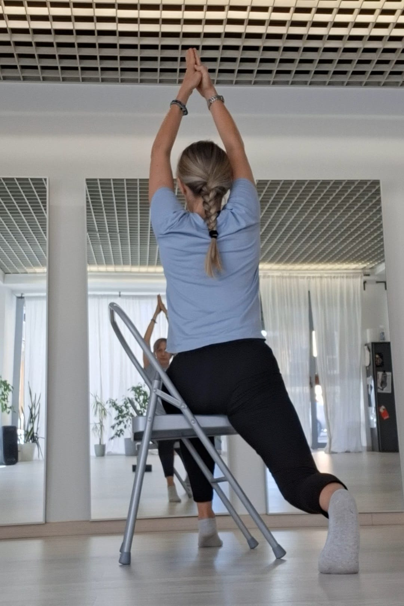
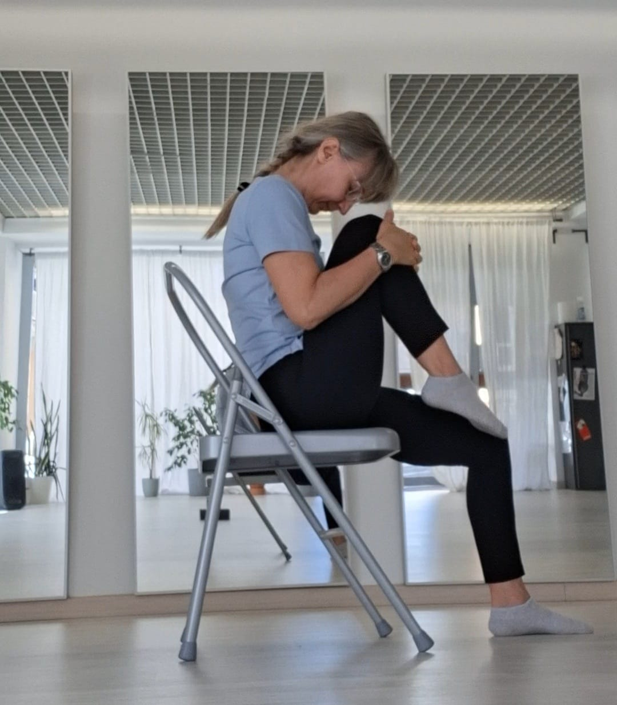

Calma, rilassamento e mobilità
Una pratica delicata che adatta le posizioni dello yoga tradizionale all'uso di una sedia come supporto, per ritrovare equilibrio e migliorare la postura in sicurezza.
Prenota la tua provaLa Ginnastica Yoga Dolce è progettato per essere accogliente, rispettoso e accessibile, indipendentemente dall'età, dalla flessibilità o dal grado di allenamento.
Utilizzando una sedia come supporto principale, adattiamo le posizioni classiche dello yoga per garantire sicurezza e comodità. È ideale per senior, per chi desidera recuperare mobilità e per chiunque cerchi una pratica gentile che nutra il corpo senza forzarlo.

Troviamo una postura comoda e stabile sulla sedia, portando l'attenzione al respiro e iniziando a sciogliere dolcemente le prime tensioni.
Movimenti lenti, supportati e controllati per lubrificare le articolazioni, allungare dolcemente la muscolatura, favorire la circolazione e ritrovare equilibrio e stabilità.
Concludiamo la lezione con tecniche di rilassamento profondo e respiro consapevole, per un senso di benessere globale e rigenerazione.
Ha iniziato a praticare yoga per ricercare il benessere nel corpo e in 15 anni di percorso ha scoperto che poteva nutrire anche il suo spirito. Oggi il suo obiettivo è condividere questo benessere con gli altri.
Si è formata presso la scuola di Yoga&Medicina come teacher training 250 plus-advanced con Giancarlo Miggiano e Beatrice Giampaoli, e prosegue i suoi studi per offrire un insegnamento sempre attento e di alta qualità.